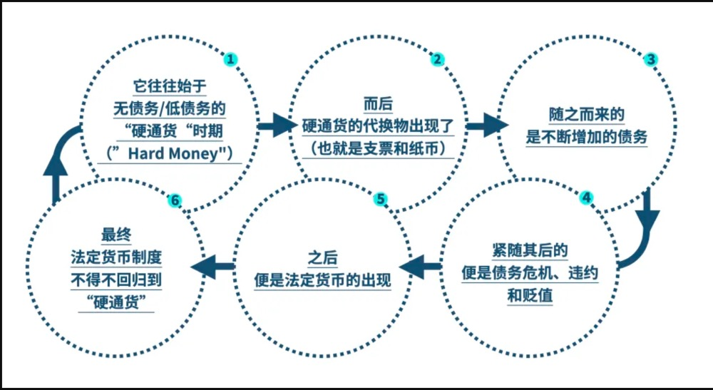

<!DOCTYPE html>
<html>
<head><meta name="generator" content="Hexo 3.9.0">
  <meta charset="utf-8">
  
  <title>货币、信贷与债务 | 守株阁</title>
  <meta name="viewport" content="width=device-width, initial-scale=1, maximum-scale=1">
  <meta name="description" content="FROM：https://mp.weixin.qq.com/s/h14q5BVSSWsNgU5K6bMEVw  货币系统：大多数货币和信贷（尤其是现存的法币）并无内在价值。所有货币要么被摧毁，要么贬值。而当这发生时，财富就会以一种浩荡的方式转移，从而在经济和市场中产生巨大的反响。然而，拥有储备货币的国家更容易摆脱大量借贷（即创造信贷和债务）或者发行巨额货币的窘境，因为储备货币可用于世界各地的支出，">
<meta name="keywords" content="经济">
<meta property="og:type" content="article">
<meta property="og:title" content="货币、信贷与债务">
<meta property="og:url" content="http://yoursite.com/2021/03/15/货币、信贷与债务/index.html">
<meta property="og:site_name" content="守株阁">
<meta property="og:description" content="FROM：https://mp.weixin.qq.com/s/h14q5BVSSWsNgU5K6bMEVw  货币系统：大多数货币和信贷（尤其是现存的法币）并无内在价值。所有货币要么被摧毁，要么贬值。而当这发生时，财富就会以一种浩荡的方式转移，从而在经济和市场中产生巨大的反响。然而，拥有储备货币的国家更容易摆脱大量借贷（即创造信贷和债务）或者发行巨额货币的窘境，因为储备货币可用于世界各地的支出，">
<meta property="og:locale" content="zh-Hans">
<meta property="og:image" content="http://yoursite.com/2021/03/15/货币、信贷与债务/长债务周期.jpg">
<meta property="og:updated_time" content="2021-03-15T12:22:06.593Z">
<meta name="twitter:card" content="summary">
<meta name="twitter:title" content="货币、信贷与债务">
<meta name="twitter:description" content="FROM：https://mp.weixin.qq.com/s/h14q5BVSSWsNgU5K6bMEVw  货币系统：大多数货币和信贷（尤其是现存的法币）并无内在价值。所有货币要么被摧毁，要么贬值。而当这发生时，财富就会以一种浩荡的方式转移，从而在经济和市场中产生巨大的反响。然而，拥有储备货币的国家更容易摆脱大量借贷（即创造信贷和债务）或者发行巨额货币的窘境，因为储备货币可用于世界各地的支出，">
<meta name="twitter:image" content="http://yoursite.com/2021/03/15/货币、信贷与债务/长债务周期.jpg">
  
    <link rel="alternate" href="/atom.xml" title="守株阁" type="application/atom+xml">
  
  
    <link rel="icon" href="/favicon.png">
  
  
  <link rel="stylesheet" href="/css/style.css">
  

<link rel="stylesheet" href="/css/prism.css" type="text/css">
<link rel="stylesheet" href="/css/prism-line-numbers.css" type="text/css"></head>
</html>
<body>
  <div id="container">
    <div id="wrap">
      <header id="header">
  <div id="banner"></div>
  <div id="header-outer" class="outer">
    
    <div id="header-inner" class="inner">
      <nav id="sub-nav">
        
          <a id="nav-rss-link" class="nav-icon" href="/atom.xml" title="RSS Feed"></a>
        
        <a id="nav-search-btn" class="nav-icon" title="搜索"></a>
      </nav>
      <div id="search-form-wrap">
        <form action="//google.com/search" method="get" accept-charset="UTF-8" class="search-form"><input type="search" name="q" class="search-form-input" placeholder="Search"><button type="submit" class="search-form-submit">&#xF002;</button><input type="hidden" name="sitesearch" value="http://yoursite.com"></form>
      </div>
      <nav id="main-nav">
        <a id="main-nav-toggle" class="nav-icon"></a>
        
          <a class="main-nav-link" href="/">首页</a>
        
          <a class="main-nav-link" href="/archives">归档</a>
        
          <a class="main-nav-link" href="/about">关于</a>
        
      </nav>
      
    </div>
    <div id="header-title" class="inner">
      <h1 id="logo-wrap">
        <a href="/" id="logo">守株阁</a>
      </h1>
      
        <h2 id="subtitle-wrap">
          <a href="/" id="subtitle">一切都是守株待兔，如切如磋，如琢如磨。I am just joking.</a>
        </h2>
      
    </div>
  </div>
</header>
      <div class="outer">
        <section id="main"><article id="post-货币、信贷与债务" class="article article-type-post" itemscope itemprop="blogPost">
  <div class="article-meta">
    <a href="/2021/03/15/货币、信贷与债务/" class="article-date">
  <time datetime="2021-03-15T09:21:12.000Z" itemprop="datePublished">2021-03-15</time>
</a>
    
  </div>
  <div class="article-inner">
    
    
      <header class="article-header">
        
  
    <h1 class="article-title" itemprop="name">
      货币、信贷与债务
    </h1>
  

      </header>
    
    <div class="article-entry" itemprop="articleBody">
      
        <!-- Table of Contents -->
        
        <p>FROM：<a href="https://mp.weixin.qq.com/s/h14q5BVSSWsNgU5K6bMEVw" target="_blank" rel="noopener">https://mp.weixin.qq.com/s/h14q5BVSSWsNgU5K6bMEVw</a></p>
<ul>
<li><p>货币系统：大多数货币和信贷（尤其是现存的法币）并无内在价值。所有货币要么被摧毁，要么贬值。而当这发生时，<strong>财富就会以一种浩荡的方式转移</strong>，从而在经济和市场中产生巨大的反响。然而，<strong>拥有储备货币的国家更容易摆脱大量借贷</strong>（即创造信贷和债务）或者发行巨额货币的窘境，因为储备货币可用于世界各地的支出，所以其他国家倾向于持有这些债务。</p>
</li>
<li><p>经济周期由短期债务周期和长期债务周期构成</p>
<ul>
<li><p>短期债务周期：通常持续8年左右，或多或少。时机取决于“兴奋剂”将需求提高到实体经济生产能力极限所需的时间。与短期债务周期相比，长债务周期需花费我们一生时间才会完成，因此大部分经济学家在内的大众根本没有意识到长期债务周期的存在。</p>
</li>
<li><p>长期债务周期：通常持续约50至75年。</p>
</li>
</ul>
</li>
</ul>
<p></p>
<ul>
<li><p>拥有储备货币地位对国家意义重大，相对于美国经济规模而言，其规模是巨大的。</p>
<ul>
<li>2008年以来，央行在MP2（QE）的基础上开启了MP3的新范式 ，这意味着具有储备货币的中央银行创造货币和信贷的能力几乎没有或没有限制。 </li>
<li>当一个国家拥有储备货币时，它可以按照自己的意愿印刷货币并借钱支出，就像美国现在的做法一样；而那些没有储备货币的人必须得到他们需要的资金和信贷（以世界储备货币计价）来进行交易和储蓄。 </li>
</ul>
</li>
</ul>
<p>硬通货（Hard Money）、纸币（Paper Money）和法币（Fiat Money）的区别和内涵：</p>
<ul>
<li><p>硬通货（Hard Money）：最早的货币形式，通常指金银等贵金属货币，是人们为了交易便捷、保存财富而发明。硬通货因为其供给的有限和实用价值（首饰等），本身具有内生价值（intrinsic value），通常也具有可分割、携带方便的特点。</p>
</li>
<li><p>纸币（Paper Money）：特点是可以兑换硬通货。如宋代交子、金本位时期的美元。纸币依托于受到公众认可的<strong>信贷实体</strong>而诞生，信贷实体（通常是银行）<strong>以硬通货作为基础来发放纸币</strong>，并向持币人承诺可随时以一定比例使用纸币兑换硬通货。因此纸币的供给量受限于信贷实体的硬通货储备量，对于央行而言硬通货储备量则取决于<strong>国家挣取硬通货</strong>的能力。因而在纸币体系下，信贷机构仅具有<strong>有限的信贷调节能力</strong>（以其持有的硬通货数量为限），否则容易发生挤兑。</p>
</li>
<li><p>法币（Fiat Money）：不和硬通货挂钩，仅仅是由某个政府的信誉担保，例如今天绝大部分法币。<strong>政府可以自由创造货币和信贷</strong>，只要人们继续对货币充满信心，平衡可以一直持续。如果人们对货币丧失信心，则会通过各种手段将该国法币兑换成储备货币（通常是美元），造成货币贬值、资本外流。</p>
</li>
</ul>
<h1 id="恒久的货币与信贷的基础原则"><a href="#恒久的货币与信贷的基础原则" class="headerlink" title="恒久的货币与信贷的基础原则"></a>恒久的货币与信贷的基础原则</h1><p>如果一个实体拥有大量的净资产（即资产远多于负债），它可以在收入之上支出，直到钱用完，这时必须削减开支；如果它有大量的负债，并且没有足够的收入支付费用和债务，债务就会被拖欠。由于一个实体的债务是另一个实体的资产，债务拖欠会减少其他实体的资产，这就要求债权实体削减开支，愈演愈烈的下行债务和经济紧缩随之而来。</p>
<p>这种货币和信用体系有一个重大的例外：<strong>所有国家都可以印钱给人们消费或借出，然而并非所有政府印制的货币都具有同等价值</strong>。</p>
<h2 id="储备货币"><a href="#储备货币" class="headerlink" title="储备货币"></a>储备货币</h2><p>在世界范围内广泛流通的货币称为储备货币。目前，美元在储备货币中独占鳌头，由美国的中央银行（美联储）发行，约占所有国际交易的55％。次之是欧元，由欧元区国家的中央银行（欧洲中央银行）发行；它约占所有国际交易的25％。尽管人民币的影响力与日俱增，日元，人民币和英镑目前仍是势力相对较弱的储备货币。</p>
<p><strong>拥有储备货币的国家更容易摆脱大量借贷（即创造信贷和债务）或者发行巨额货币的窘境</strong>，因为储备货币可用于世界各地的支出，所以其他国家倾向于持有这些债务。</p>
<ul>
<li><p>发行储备货币的国家可以发行大量以它们计价的货币和信贷，尤其是货币短缺的情况下。</p>
</li>
<li><p>相反，非储备货币国家没有这种选择。当非储备货币国迫切需要储备货币来偿还以之计价的债务，或从接受储备货币支付的卖家那里购买商品时，这些国家将无法获得足够的储备货币来满足需求，最终走向破产。</p>
</li>
</ul>
<h2 id="什么是货币"><a href="#什么是货币" class="headerlink" title="什么是货币"></a>什么是货币</h2><p>货币是一种交易媒介，同时可以作为财富储备。</p>
<ol>
<li><p>大多数货币和信贷（尤其是现存的法币）并无内在价值；</p>
</li>
<li><p>会计系统中的日记账分录很容易更改；</p>
</li>
<li><p>该系统的目的是帮助有效地分配资源，从而提高生产力，奖励贷款人和借款人，</p>
</li>
<li><p>这个系统会定期崩溃。 </p>
</li>
</ol>
<p>因此从一开始，<strong>所有货币要么被摧毁，要么贬值</strong>。当货币被摧毁或贬值时，财富就会以一种浩荡的方式转移，从而在经济和市场中产生巨大的反响。</p>
<p>更具体地说，货币和信贷体系并没有发挥完美的作用，而是在一个<strong>周期内改变货币的供给、需求和价值</strong>，这个周期在上升时产生令人愉悦的富足，在下降时释出过程惨痛的重组。</p>
<h1 id="经济周期的基本构成"><a href="#经济周期的基本构成" class="headerlink" title="经济周期的基本构成"></a>经济周期的基本构成</h1><p><strong>虽然货币和信贷与财富息息相关，但它们不是财富</strong>。因为要创造财富就必须提高生产力，一个人不能只通过创造更多的资金和信贷来获得财富，原因有二：</p>
<ol>
<li><p>人们在通过信贷推高价格和生产的同时，必须偿还这些信贷，<strong>偿还信贷的时候会对经济产生相反的效果</strong>；</p>
</li>
<li><p><strong>事物的内在价值不会因为它们的价格上涨而增加</strong>。</p>
</li>
</ol>
<p>货币和信贷在发放时是一针强心剂，但偿还时就变成了一盆冷水。这就是<strong>货币、信贷和经济增长颇具周期性的原因</strong>。</p>
<p>为了控制市场和经济，掌握货币和信贷的主体（即央行）通过不断调整和改变二者的成本与获取难易度，来保证经济不会失控，但是<strong>政府的弹药是有限的</strong>。</p>
<p>政府的举措导致货币、信贷、商品、服务和金融资产数量和价格的周期性涨跌，并通常以<strong>短期和长期两个债务周期</strong>的形式出现。</p>
<h2 id="短期债务周期"><a href="#短期债务周期" class="headerlink" title="短期债务周期"></a>短期债务周期</h2><p>短期的涨跌周期通常持续<strong>8年左右</strong>，或多或少。时机取决于“兴奋剂”将需求提高到实体经济生产能力极限所需的时间。大多数人已经见证了不少短期债务周期，以至于他们错误地认为，人们将永远以这种方式继续下去。它们通常被称为“商业周期”，不过我把称之为“短债务周期”，以区别于“长债务周期”。但不同于我们所有人都经历过且了解的短债务周期，长债务周期需花费我们一生时间才会完成。而谈及长期债务周期时，包括大部分经济学家在内的大众，根本没有意识到或不承认债务存在。要搞清楚长周期运作方式，我们必须研究众多国家数百年来经历，以获得充足样本。</p>
<h2 id="长期债务周期"><a href="#长期债务周期" class="headerlink" title="长期债务周期"></a>长期债务周期</h2><p>长期来看，这些短期债务周期加起来就是长债务周期，通常持续约50至75年。</p>
<ul>
<li><p>因为大多数人一生中只经历一次，所以人们意识不到长期债务周期的存在。因此，人们一次次地为之震惊，也被它伤害。</p>
</li>
<li><p>上一个大的长债务周期，即我们现在所处的周期，是1944年在新罕布什尔州的布雷顿森林设计的，1945年二战结束后，美元/美国主导的世界秩序拉开了帷幕。</p>
</li>
</ul>
<p>长期债务周期开始时，早前的超额债务透过某种形式完成重组，债务维持低水平的同时，中央银行瓶中也充满着兴奋剂。但当债务水平攀升，中央银行瓶中的兴奋剂所剩无几时，长债务危机便结束了。更具体的说，<strong>当中央银行无法透过增发货币和债务水平，促成实质经济增长时，央行的刺激能力便走到了尽头</strong>。央行失能通常发生在<strong>债务水平高企、而利率无法继续降低</strong>的时候，此时增发的货币将推高资产价格，而非助推经济活动；那时，手握债权者都想将其转化为其他财富。当人们普遍认为：金钱和可换取金钱的债务资产，不再是良好的财富储备时，长期债务周期便将结束，货币体系必然面临重组。</p>
<p>换而言之，长期债务周期始于：</p>
<ol>
<li><p>债务水平低（令控制货币和贷款增长者有足够空间制造债务，为借款人创造购买力，而贷方极大可能获得良好收益），直到社会来到了。</p>
</li>
<li><p>高债务水平和债务负担的阶段，此时银行不再有能力为借款人推高购买力，获得高回报可能性也很小。长期债务周期结束时，银行瓶中几乎没有兴奋剂（中央银行不再有延长债务周期的能力），因此需要进行<strong>债务重组，或债务贬值，减轻负担</strong>，令周期重启。</p>
</li>
</ol>
<p>01 它往往始于无债务/低债务的“硬通货”时期（”Hard Money”）It Begins with No or Low Debt and “Hard Money”</p>
<p>02 而后，硬通货的代换物出现了（也就是支票和纸币）Then Come Claims on “Hard Money” (aka, “Notes” or “Paper Money”)</p>
<p>信贷实体应运而生（后来被称为银行，但早期涵盖各种获得人们信任的机构，例如中国的寺庙）。</p>
<p>03 随之而来的是不断增加的债务 Then Comes Increased Debt </p>
<p>然而随着债务资产相比于实际存在的商品和服务不再平衡，两个不切实际的问题便会同时出现:</p>
<p>1.人们的收入不足以偿还债务：债务是一种“负收益“的资产（negative earnings / negative asset that eats up earning），但其拥有更高的优先级（seniority）</p>
<p>如果不足以偿还债务的话，那么债务人只有两条路可以走：</p>
<p>a）债务重组，以减少债务和债务负担。当然这对债务人和债权人都是难以接受的，因为一个人的债务，会是另一人的资产；</p>
<p>b）央行印钞、中央政府发放货币和信贷，来填补收入和资产负债表的漏洞，这种情况就是目前面对疫情对经济的冲击下，正在发生的。</p>
<p>2.人们寄希望于出售不断贬值的债务资产偿还债务：当债务人不相信他们将从中获得足够的回报时，他们便寄希望于出售不断贬值的债务资产偿还债务。</p>
<p>挤兑很容易出现，无论是商业银行还是央行都将面临抉择</p>
<p>要不允许大量的资金流出债务资产，利率随之上升，使债务问题进一步恶化；</p>
<p>要不开启印钞机，将那些被出售的债务资产都购买下来，防止利率上升，寄希望于此安抚市场情绪，使挤兑不再继续。</p>
<p>因受到生产能力的限制，商品和服务的数量是有限的，银行里的“硬通货”（即黄金储备）也是有限的，然而“硬通货”对应的纸质货币却是不断增长的。我们需要注意两点： </p>
<p>a）债务和金钱和银行里的“硬通货”（黄金储备）是否平衡；</p>
<p>b）现有商品和服务的数量。</p>
<p>04 紧随其后的便是债务危机、违约和贬值 Then Come Debt Crises, Defaults, and Devaluations</p>
<p>商业银行只能选择违约或者依靠政府援助，央行也可以选择货币贬值，如果债务是以本国货币计价的话，其最终可能只需偿还原本债务的50%-70%左右，但面对以外币计价的债务，违约是唯一的选择了。</p>
<p>05 之后，便是法定货币的出现 Then Comes Fiat Money</p>
<p>中央银行希望尽可能延长货币和信贷周期，因为这要比其他替代方案要好得多。但这种“金本位”的制度是有局限性的，其后法定货币站上了山头。</p>
<p>当信贷周期达到极限时，最合乎逻辑的又比较常用的政策是让中央政府和央行增加大量债务并印钞，将其用于商品，服务和投资资产，以保持经济发展。</p>
<p>中央银行“印钞”以鼓励支出的优点。 </p>
<ul>
<li><p>债务必须被偿还，因此容易引发各种各样的问题</p>
</li>
<li><p>而只要货币用于提高生产，单纯的货币增长是不容易带来各种各样问题的。</p>
</li>
</ul>
<p>中央银行“印钞”的风险： </p>
<p>a）市场参与者将无法仔细分析货币是否已投入生产性使用</p>
<p>b）消除了偿还货币的需要</p>
<p>一次次的历史实践证明，我们不应当依靠政府的财务担保。</p>
<ul>
<li><p>政府将比任何个人、公司和其他金融实体更容易陷入债务漩涡。<br>在几乎所有情况下，政府都会通过举债成为最大的债务人。当债务泡沫破裂时，政府会通过印钞和贬值来救助自己和其他债务人。</p>
</li>
<li><p>印钞购买债务的方式被称为债务货币化。在政治层面上，这种方式相比于征税更容易令大多数人接受。</p>
</li>
<li><p>纵观整个历史，统治者积累的债务直到统治结束很久才显现出问题，而留给其继任者收拾残局。</p>
</li>
</ul>
<p>当央行印钞并购买债券时，资金流入金融市场，推高金融资产价值，当然这进一步加剧了贫富差距的扩大。</p>
<p>最终，法定货币制度不得不回归到“硬通货”Then Comes the Flight Back into Hard Mone</p>
<p>法定货币的过度印刷终会导致债务资产的出售，以及先前描述的银行挤兑，最终会降低货币和信贷的价值，从而促使人们逃离货币和债务去选择其他储蓄财富的方式。</p>
<p>巨大的贫富差距也会造成经济压力</p>
<ul>
<li><p>从而导致更高的税收，富人们更希望转向更保值的资产，甚至转移到其他国家。</p>
</li>
<li><p>自然而然的，面对资本外逃的政府会想方设法制止其发生。往往政府会取缔黄金交易、禁止外币交易、建立外汇管制机制。</p>
</li>
</ul>
<p>当这种情况变得极端，以致货币和信贷系统崩溃，债务被贬值甚至被拖欠时，通常就必须迫使各国政府重新使用某种形式的“硬通货”，以重建人们对于储备货币的信念。</p>
<p>在过去的近一个世纪中，许多国家都将自己的本国货币和美元挂钩，变相地将美元作为交换的媒介和财富的储备。</p>
<p>06 最终，法定货币制度不得不回归到“硬通货”Then Comes the Flight Back into Hard Mone</p>
<p>法定货币的过度印刷终会导致债务资产的出售，以及先前描述的银行挤兑，最终会降低货币和信贷的价值，从而促使人们逃离货币和债务去选择其他储蓄财富的方式。</p>
<p>巨大的贫富差距也会造成经济压力</p>
<ul>
<li><p>从而导致更高的税收，富人们更希望转向更保值的资产，甚至转移到其他国家。</p>
</li>
<li><p>自然而然的，面对资本外逃的政府会想方设法制止其发生。往往政府会取缔黄金交易、禁止外币交易、建立外汇管制机制。</p>
</li>
</ul>
<p>当这种情况变得极端，以致货币和信贷系统崩溃，债务被贬值甚至被拖欠时，通常就必须迫使各国政府重新使用某种形式的“硬通货”，以重建人们对于储备货币的信念。</p>
<p>在过去的近一个世纪中，许多国家都将自己的本国货币和美元挂钩，变相地将美元作为交换的媒介和财富的储备。</p>
<p>长期债务周期持续时间长（大约50到75年），其特征是债务和货币体系的重组。但债务和货币危机时期通常发生得极为迅速，仅持续数月或长达三年，通常都会发生两到四次重大债务危机。</p>
<h1 id="储备货币地位对国家的意义"><a href="#储备货币地位对国家的意义" class="headerlink" title="储备货币地位对国家的意义"></a>储备货币地位对国家的意义</h1><h2 id="回顾美国货币体系发展历史"><a href="#回顾美国货币体系发展历史" class="headerlink" title="回顾美国货币体系发展历史"></a>回顾美国货币体系发展历史</h2><h3 id="布雷顿森林协定使美元在1944年成为世界领先的储备货币。"><a href="#布雷顿森林协定使美元在1944年成为世界领先的储备货币。" class="headerlink" title="布雷顿森林协定使美元在1944年成为世界领先的储备货币。"></a>布雷顿森林协定使美元在1944年成为世界领先的储备货币。</h3><p>美国和美元自然可以适应其中之所以发挥作用，是因为在战争结束时，美国拥有的政府黄金约占世界的2/3（当时是世界的货币），占世界经济生产的50％，并且是主要的军事力量。</p>
<h3 id="布雷顿森林体系的货币体系于1971年8月15日崩溃"><a href="#布雷顿森林体系的货币体系于1971年8月15日崩溃" class="headerlink" title="布雷顿森林体系的货币体系于1971年8月15日崩溃"></a>布雷顿森林体系的货币体系于1971年8月15日崩溃</h3><p>原因：美国政府在随后的几年花费了超过税收的收入，因此不得不借钱，这增加了以美元计价的债务。 </p>
<p>结果：</p>
<ul>
<li><p>美元对黄金和其他货币贬值。从那一刻开始，美国和所有国家进入第三类货币体系（即无兑现实际的资产义务法定货币）的时候。 </p>
</li>
<li><p>美联储和其他中央银行从实物兑付压力中解放，创造了大量以美元计价的货币和信贷，从而导致了1970年代通货膨胀，其特征是商品， 服务和对冲资产（如黄金）的价格上涨。</p>
</li>
</ul>
<h3 id="1979-82年的货币和信贷危机"><a href="#1979-82年的货币和信贷危机" class="headerlink" title="1979-82年的货币和信贷危机"></a>1979-82年的货币和信贷危机</h3><p>以美元计价的债务迅速增长，导致了债务周期中经典的债务泡沫。 美元和以美元计价的债务面临着不再成为公认财富储备物的风险。 </p>
<p>影响</p>
<ul>
<li><p>抛售美元/美元计价的资产，买入通胀对冲资产；</p>
</li>
<li><p>迅速借入美元转变为实际债务。 </p>
</li>
</ul>
<h3 id="保罗·沃尔克（Paul-Volcker）债务重组"><a href="#保罗·沃尔克（Paul-Volcker）债务重组" class="headerlink" title="保罗·沃尔克（Paul Volcker）债务重组"></a>保罗·沃尔克（Paul Volcker）债务重组</h3><p>为应对这场货币通胀危机并打破通货膨胀，沃尔克收紧了货币供应。</p>
<ul>
<li><p>债务人必须在收入和资产价值下降的同时，支付更多的债务。这给债务人造成了巨大的压力，并迫使他们出售资产以偿还债务。</p>
</li>
<li><p>那时的市场对美元的需求还很巨大，所以美元体系整体保持了稳定。</p>
</li>
</ul>
<p>后续影响</p>
<ul>
<li><p>美国通货膨胀率下降了</p>
<ul>
<li><p>这使美联储可以降低利率，并为美国人放松货币和信贷。</p>
</li>
<li><p>通货膨胀率下降也使得在1980年代的债券和其他通缩资产表现出色。</p>
</li>
</ul>
</li>
<li><p>许多贬值的债务人和相应资产的持有人的破产</p>
<ul>
<li><p>因此，在20世纪80年代，这些破产的债务人（大多数是外国债务人，尤其是新兴国家的债务人），经历了长达十年的萧条和债务重组期。 </p>
</li>
<li><p>债务管理和重组过程一直持续到1991年，当时该债务通过布雷迪债券协议完成，该协议以当时的美国财政部长尼古拉斯·布雷迪（Nicholas Brady）的名字命名。</p>
</li>
</ul>
</li>
</ul>
<h3 id="若干短期债务周期"><a href="#若干短期债务周期" class="headerlink" title="若干短期债务周期"></a>若干短期债务周期</h3><p>自新的以美元计价的货币体系以来，利率和通胀率的整个大周期都在剧烈波动。</p>
<ul>
<li><p>2000互联网泡沫：20世纪90年代全球货币，信贷和债务的新一波增长又开始了。这再次推动经济走向繁荣期，并导致通过债务融资购买的投机性投资大幅增加，最终变成了互联网泡沫，并在2000年破裂。</p>
</li>
<li><p>07-08年债务泡沫：2000-01年的经济衰退，刺激美联储放松了货币和信贷，这将债务水平推到了新高，并创造了另一种繁荣，这种繁荣在2007年变成了另一个更大的债务泡沫，并在2008年破裂，导致了美联储和其他储备货币国家的中央银行再次放松，导致了最近破裂的下一个泡沫。</p>
</li>
</ul>
<p>但是，2008年为应对经济低迷而需要的货币和信贷创造的设计却有所不同。 </p>
<ul>
<li><p>利率失去下降空间：短期利率在2008年达到了0％，而且下降幅度不足以创造市场所需要的货币和信贷规模。</p>
</li>
<li><p>央行转而QE：降低利率是央行的首选头牌货币政策。由于这种政策不再有效，中央银行转向了第二选择印钞和购买金融资产，主要是政府债券和一些优质债务。</p>
<ul>
<li>这种情形上一次出现在1933年出现0%利率的时候开始，一直持续到世界大战爆发。</li>
</ul>
</li>
<li><p>QE导致新的货币/信贷/经济范式一直持续至今，由新冠疫情引发的经济衰退时期。</p>
</li>
</ul>
<h2 id="2008年以来的新范式"><a href="#2008年以来的新范式" class="headerlink" title="2008年以来的新范式"></a>2008年以来的新范式</h2><p>QE的传导机制</p>
<ul>
<li>央行通过印刷货币和购买债务，抬高债券价格，并向这些债券的卖方提供现金，从而促使他们购买其他资产。</li>
<li>随着资产价格的上涨，拉低了未来的预期收益。由于利率低于其他投资的预期回报率和债券收益率，投资者越来越多地借钱购买他们期望比借贷成本回报更高的资产。</li>
<li>这两者都推高了这些资产的价格，又造成了新的债务泡沫。</li>
</ul>
<p>无论如何，在此期间，债务和非债务（例如养老金和医保）相对于收入继续上升，而中央银行设法降低了偿债成本。这将利率推至零，并使债务长期化，以至于本金支付将很低——<strong>这意味着中央银行创造货币和信贷的能力几乎没有或没有限制</strong>。</p>
<p>拥有世界储备货币可能是最重要的力量，甚至比军事力量还要强大。这是因为</p>
<ul>
<li><p>当一个国家拥有储备货币时，它可以按照自己的意愿印刷货币并借钱支出，就像美国现在的做法一样；</p>
<ul>
<li><p>在1944年美元是世界上主要的储备货币时，美国政府持有的黄金约占世界黄金的2/3（在当时被认为是货币），约占世界GDP的一半。</p>
</li>
<li><p>如今，美国仅占世界GDP的20％左右，但仍占全球储备的60％和国际交易的约一半，相对于美国经济规模而言，其规模是巨大的。</p>
</li>
</ul>
</li>
<li><p>而那些没有储备货币的人必须得到他们需要的资金和信贷（以世界储备货币计价）来进行交易和储蓄。 </p>
<ul>
<li><p>美联储以对美国人有利的方式实施其货币政策（如直升机撒钱），但对依赖美元的世界其他国家却可能不利。世界上大多数国家都无法像美国人那样获得他们需要的金钱和信贷来填补损益表和资产负债表的空缺。</p>
</li>
<li><p>非美国人（即新兴市场，欧洲国家和中国）所欠的债务约为20万亿美元（比2008年高约50％），其中不到一半是短期的。这些美元债务人不得不拿出美元来偿还这些债务。</p>
</li>
</ul>
</li>
</ul>
<p>重大周期始于新的世界秩序，即一种新的国内和国际运作方式，其中包括新的货币制度和新的政治制度。上一次的大周期始于1945年，按照50-75年的长周期运算，我们已经接近了这个周期的尾声。</p>

      
    </div>
    <footer class="article-footer">
      <a data-url="http://yoursite.com/2021/03/15/货币、信贷与债务/" data-id="ckoibiem900egw9a1rz5yfxr1" class="article-share-link">分享</a>
      
      
      
  <ul class="article-tag-list"><li class="article-tag-list-item"><a class="article-tag-list-link" href="/tags/经济/">经济</a></li></ul>

    </footer>
  </div>
  
    
 <script src="/jquery/jquery.min.js"></script>
  <div id="random_posts">
    <h2>推荐文章</h2>
    <div class="random_posts_ul">
      <script>
          var random_count =4
          var site = {BASE_URI:'/'};
          function load_random_posts(obj) {
              var arr=site.posts;
              if (!obj) return;
              // var count = $(obj).attr('data-count') || 6;
              for (var i, tmp, n = arr.length; n; i = Math.floor(Math.random() * n), tmp = arr[--n], arr[n] = arr[i], arr[i] = tmp);
              arr = arr.slice(0, random_count);
              var html = '<ul>';
            
              for(var j=0;j<arr.length;j++){
                var item=arr[j];
                html += '<li><strong>' + 
                item.date + ':&nbsp;&nbsp;<a href="' + (site.BASE_URI+item.uri) + '">' + 
                (item.title || item.uri) + '</a></strong>';
                if(item.excerpt){
                  html +='<div class="post-excerpt">'+item.excerpt+'</div>';
                }
                html +='</li>';
                
              }
              $(obj).html(html + '</ul>');
          }
          $('.random_posts_ul').each(function () {
              var c = this;
              if (!site.posts || !site.posts.length){
                  $.getJSON(site.BASE_URI + 'js/posts.js',function(json){site.posts = json;load_random_posts(c)});
              } 
               else{
                load_random_posts(c);
              }
          });
      </script>
    </div>
  </div>

    
<nav id="article-nav">
  
    <a href="/2021/03/15/货币价值的变迁/" id="article-nav-newer" class="article-nav-link-wrap">
      <strong class="article-nav-caption">上一篇</strong>
      <div class="article-nav-title">
        
          货币价值的变迁
        
      </div>
    </a>
  
  
    <a href="/2021/03/15/世界财富与权力大转移背后的规律/" id="article-nav-older" class="article-nav-link-wrap">
      <strong class="article-nav-caption">下一篇</strong>
      <div class="article-nav-title">世界财富与权力大转移背后的规律</div>
    </a>
  
</nav>

  
</article>
 
     
  <div class="comments" id="comments">
    
     
       
      <div id="cloud-tie-wrapper" class="cloud-tie-wrapper"></div>
    
       
      
      
  </div>
 
  

</section>
           
    <aside id="sidebar">
  
    

  
    
    <div class="widget-wrap">
    
      <div class="widget" id="toc-widget-fixed">
      
        <strong class="toc-title">文章目录</strong>
        <div class="toc-widget-list">
              <ol class="toc"><li class="toc-item toc-level-1"><a class="toc-link" href="#恒久的货币与信贷的基础原则"><span class="toc-number">1.</span> <span class="toc-text">恒久的货币与信贷的基础原则</span></a><ol class="toc-child"><li class="toc-item toc-level-2"><a class="toc-link" href="#储备货币"><span class="toc-number">1.1.</span> <span class="toc-text">储备货币</span></a></li><li class="toc-item toc-level-2"><a class="toc-link" href="#什么是货币"><span class="toc-number">1.2.</span> <span class="toc-text">什么是货币</span></a></li></ol></li><li class="toc-item toc-level-1"><a class="toc-link" href="#经济周期的基本构成"><span class="toc-number">2.</span> <span class="toc-text">经济周期的基本构成</span></a><ol class="toc-child"><li class="toc-item toc-level-2"><a class="toc-link" href="#短期债务周期"><span class="toc-number">2.1.</span> <span class="toc-text">短期债务周期</span></a></li><li class="toc-item toc-level-2"><a class="toc-link" href="#长期债务周期"><span class="toc-number">2.2.</span> <span class="toc-text">长期债务周期</span></a></li></ol></li><li class="toc-item toc-level-1"><a class="toc-link" href="#储备货币地位对国家的意义"><span class="toc-number">3.</span> <span class="toc-text">储备货币地位对国家的意义</span></a><ol class="toc-child"><li class="toc-item toc-level-2"><a class="toc-link" href="#回顾美国货币体系发展历史"><span class="toc-number">3.1.</span> <span class="toc-text">回顾美国货币体系发展历史</span></a><ol class="toc-child"><li class="toc-item toc-level-3"><a class="toc-link" href="#布雷顿森林协定使美元在1944年成为世界领先的储备货币。"><span class="toc-number">3.1.1.</span> <span class="toc-text">布雷顿森林协定使美元在1944年成为世界领先的储备货币。</span></a></li><li class="toc-item toc-level-3"><a class="toc-link" href="#布雷顿森林体系的货币体系于1971年8月15日崩溃"><span class="toc-number">3.1.2.</span> <span class="toc-text">布雷顿森林体系的货币体系于1971年8月15日崩溃</span></a></li><li class="toc-item toc-level-3"><a class="toc-link" href="#1979-82年的货币和信贷危机"><span class="toc-number">3.1.3.</span> <span class="toc-text">1979-82年的货币和信贷危机</span></a></li><li class="toc-item toc-level-3"><a class="toc-link" href="#保罗·沃尔克（Paul-Volcker）债务重组"><span class="toc-number">3.1.4.</span> <span class="toc-text">保罗·沃尔克（Paul Volcker）债务重组</span></a></li><li class="toc-item toc-level-3"><a class="toc-link" href="#若干短期债务周期"><span class="toc-number">3.1.5.</span> <span class="toc-text">若干短期债务周期</span></a></li></ol></li><li class="toc-item toc-level-2"><a class="toc-link" href="#2008年以来的新范式"><span class="toc-number">3.2.</span> <span class="toc-text">2008年以来的新范式</span></a></li></ol></li></ol>
          </div>
      </div>
    </div>

  
    

  
    
  
    
  
    

  
    
  
    <!--微信公众号二维码-->


  
</aside>

      </div>
      <footer id="footer">
  
  <div class="outer">
    <div id="footer-left">
      &copy; 2014 - 2021 magicliang&nbsp;|&nbsp;
      主题 <a href="https://github.com/giscafer/hexo-theme-cafe/" target="_blank">Cafe</a>
    </div>
     <div id="footer-right">
      联系方式&nbsp;|&nbsp;magicliang@qq.com
    </div>
  </div>
</footer>
 <script src="/jquery/jquery.min.js"></script>
    </div>
    <nav id="mobile-nav">
  
    <a href="/" class="mobile-nav-link">首页</a>
  
    <a href="/archives" class="mobile-nav-link">归档</a>
  
    <a href="/about" class="mobile-nav-link">关于</a>
  
</nav>
    
<script>
// Elevator script included on the page, already.
window.onload = function() {
  var elevator = new Elevator({
    selector:'.back-to-top-btn',
    element: document.querySelector('.back-to-top-btn'),
    duration: 1000 // milliseconds
  });
}
</script>
      

  
    <script>
      var cloudTieConfig = {
        url: document.location.href, 
        sourceId: "",
        productKey: "e2fb4051c49842688ce669e634bc983f",
        target: "cloud-tie-wrapper"
      };
    </script>
    <script src="https://img1.ws.126.net/f2e/tie/yun/sdk/loader.js"></script>
    

  


<!-- author:forvoid begin -->
<!-- author:forvoid begin -->

<!-- author:forvoid end -->

<!-- author:forvoid end -->


  
    <script type="text/x-mathjax-config">
      MathJax.Hub.Config({
        tex2jax: {
          inlineMath: [ ['$','$'], ["\\(","\\)"]  ],
          processEscapes: true,
          skipTags: ['script', 'noscript', 'style', 'textarea', 'pre', 'code']
        }
      })
    </script>

    <script type="text/x-mathjax-config">
      MathJax.Hub.Queue(function() {
        var all = MathJax.Hub.getAllJax(), i;
        for (i=0; i < all.length; i += 1) {
          all[i].SourceElement().parentNode.className += ' has-jax';
        }
      })
    </script>
    <script type="text/javascript" src="https://cdn.rawgit.com/mathjax/MathJax/2.7.1/MathJax.js?config=TeX-AMS-MML_HTMLorMML"></script>
  


 <script src="/js/is.js"></script>


  <link rel="stylesheet" href="/fancybox/jquery.fancybox.css">
  <script src="/fancybox/jquery.fancybox.pack.js"></script>


<script src="/js/script.js"></script>
<script src="/js/elevator.js"></script>
  </div>
</body>
</html>